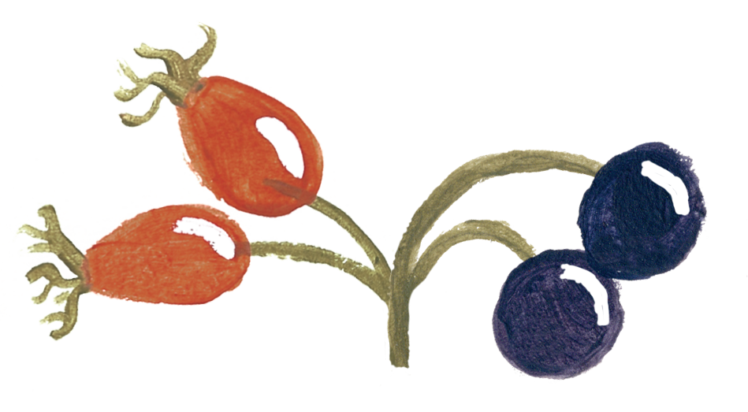
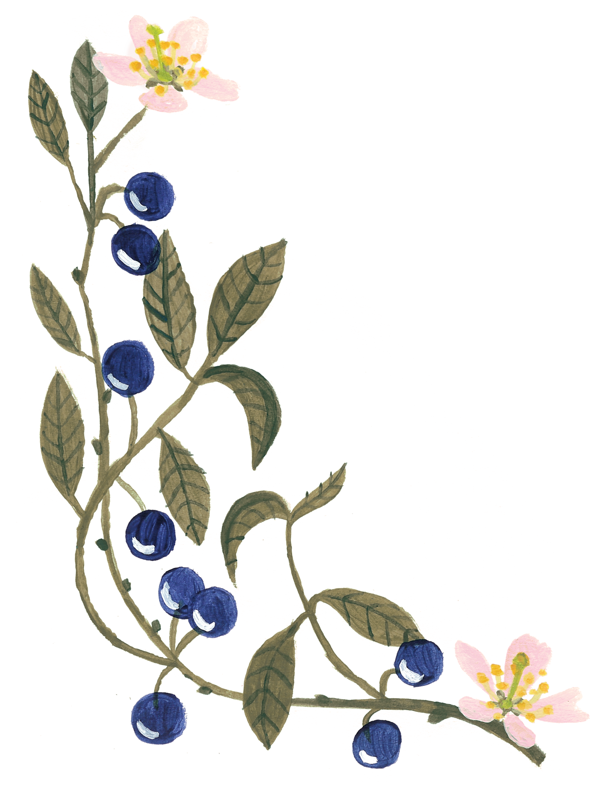
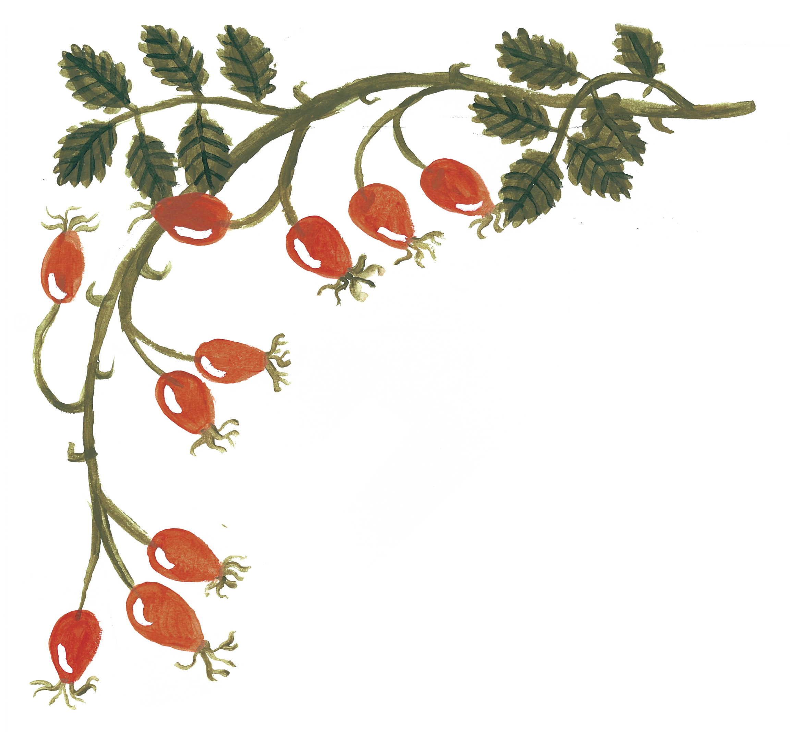

Barbora Gavendová
&
Matěj Lang
12. září · 2026 · Fulnek

12. září · 2026 · Fulnek



S radostí oznamujeme, že budeme 12. 9. 2026 oddáni ve 12:00 na zámku Fulnek. Při hezkém počasí se obřad uskuteční v zámecké zahradě, v případě deště pak ve vnitřních prostorech zámku. Obřad začne ve 12:00, dostavte se na místo prosím alespoň s desetiminutovým předstihem.
Parkovat pro svatebčany je možné přímo v areálu zámku. Možné je také parkovat na Komenského náměstí ve Fulneku a k zámku dojít.
Shodou náhod se tak stalo, že se Barča s Matějem potkali jeden kopec vedle Fulneckého zámku. Bylo to v červenci 2017.
Hostina proběhne v Rodném domě Johana Gregora Mendela na adrese Hynčice 69, Vražné.
Objekt je starší statek s velkou zděnou stodolou, kde proběhne hostina a zábava, a kde budou někteří hosté moci na noc složit hlavu.
Hned u objektu jsou dvě parkoviště, jejich kapacita však není nekonečná. Pokud budete např. v rámci rodiny cestovat jedním autem místo dvou, ušetříte někomu jinému nebo i sobě nervy s hledáním dalšího parkování.
Potkali jsme se na táboře, který spolu doteď organizujeme, a k tomu sem tam děláme i zážitkové akce pro dospělé účastníky. Naše svatba bude v podobném stylu. Nečekejte luxusní pětihvězdičkový hotel, místo toho máme moc hezký statek, který je rodným domem otce genetiky Johanna Gregora Mendela. Fakt, že nevěsta vystudovala genetiku a ženich vyrůstal ulici vedle kláštera, kde Mendel dělal své experimenty, je milá shoda náhod.
Nevěsta s ženichem a svými velkorysými kamarády budou na objektu už od čtvrtečního odpoledne. Předpokládáme, že většina svatebčanů přijede v sobotu. Na objekt můžete dojet i před obřadem a odložit si tam např. věci. Pokud s vámi počítáme s přespáním a vyhovovalo by vám ubytovat se už i z pátku na sobotu, není to problém. Napište nám to ve formuláři.
Chystání svatby je skvělá skupinová aktivita, kde máte šanci poznat rodiny a blízké kamarády v akci. Pokud si takovou příležitost nechcete nechat ujít, rádi Vás uvidíme. Budeme uklízet objekt, zdobit a celkově připravovat sobotní oslavu. Pokud nám chcete dojet pomoct ještě před dnem svatby, zapište to prosím do formuláře.
Na statku je cca 40 lůžek na palandách ve dvou sdílených pokojích. Pokud máte zájem, můžete také přespat ve stanu na louce a ve dvorku statku. Pokud jsme se nedomluvili jinak, počítáme s tím, že spíte ve sdílených pokojích. Případně si můžete zajistit ubytování po vlastní ose.
Pro některé členy rodiny jsme zarezervovali nedaleký hotel. Všem, se kterými počítáme s přespáním na hotelu, se osobně ozveme a domluvíme se.
Abyste nám usnadnili veškeré plánování, vyplňte nám prosím formulář. Potřebujeme totiž vědět, jestli dojedete, jestli máte nějaká stravovací omezení, kde preferujete přespat, a kdy přijedete. Formulář vyplňte do 1. 8., ať víme, jestli s vámi máme počítat.
Očekáváme přiměřeně společenské oblečení, smoking od vás nikdo nečeká a módní policie byla uplacena kávou a koblihami, aby se svatebništi vyhnuli. Pokud budete oblečeni méně honosně, čekají vás jen odsuzující pohledy tetiček a babiček.
Co se barev týče, oblečte si, co jen se vám líbí a sluší, pokud to tedy nebudou bílé svatební šaty, ty si už zamluvila nevěsta (a Oto je má povolené taky). Pokud toužíte ladit s našimi dekoracemi a ubrusy, plánujeme svatbu v těchto barvách:
Oba jsme velcí milovníci psů a dělají nám velikou radost. To ale taky znamená, že naše rodiny psy mají a tito psi budou na svatbě přítomni. Doufáme, že s tím nemáte problém; pokud ano, tak není v našich silách s tím nic udělat. Vaše pejsky bychom na svatbě moc rádi pomazlili, bohužel pes nevěstiny rodiny má mnoho názorů na jiné psy, veskrze negativních. Aby byly ušetřeny nervy rodičů nevěsty, nechte prosím své psy doma. Fenky mají vstup povolen (nevěstin pes je sexista).
Děti, narozdíl od psů, jsou srdečně vítány! Jen je prosíme zmiňte ve formuláři.
Na svatbě budou minimálně tito dva psi: Frodo (pes nevěstiných rodičů), jehož nejlepší kamarád je esence tenisového míčku, a Enigma (fenka ženichových rodičů), jejíž životním posláním je vrtět.
Potkali jsme se na táboře, o kterém s láskou říkáme, že není pro hubené děti. Naši táboroví kuchaři (ke kterým mimochodem patří i ženich) jsou prostě boží, zařídí vše a budete mít nebe v hubě. A budou vařit na svatbě i nám! Nečekejte ale žádnou táborovou kuchyni, vaří líp než kdejaká restaurace.
Jídlo pro Vás bude zajištěné od sobotního oběda až do nedělní snídaně, na kterou čekejte hlavně hromadu jídla, které jsme do sebe nezvládli nacpat předchozí den.
Co se týče sladkého jídla, můžete se určitě těšit na dort, svatební koláčky a další zákusky. Pokud se chcete sami vytahovat svými cukrářskými schopnostmi, můžete donést sladký výtvor vlastní výroby.
Abychom věděli, co všechno můžete a nemůžete jíst, vyplňte prosím náš formulář.
Pár es si necháme v rukávu, můžeme ale prozradit, že budete mít šanci se podívat do Mendelova muzea, vidět fyzikální představení, a hodně hodně tančit. Jsme nadšení tanečníci standardu, latiny a především swingu, tak si oprašte své choreografie a oblíbené tance, baby přece nebude sedět v koutě!
Velikou radost nám udělá přáníčko s osobním vzkazem, třeba nějakou vzpomínkou, co na jednoho z nás nebo na nás oba máte, a třeba nějakou fotkou. Domácnost vybavenou máme a porcelánoví jeleni ve skoku už jsou taky na cestě, takže nemusíte nosit vlastní. Pokud se cítíte obzvlášť štědře, potěší nás finanční dar na naše nové bydlení ve Vídni, kam se plánujeme na čas stěhovat. Samozřejmě ale peníze neočekáváme a od studentů je nepřijímáme; to si nechte na pivo a něco hezkého na sebe.
Máme domluveného profesionálního a velice šikovného fotografa, takže vlastní zrcadlovku můžete nechat doma. Po svatbě fotky naleznete na těchto stránkách a ještě vám pošleme e‑mailem odkaz.